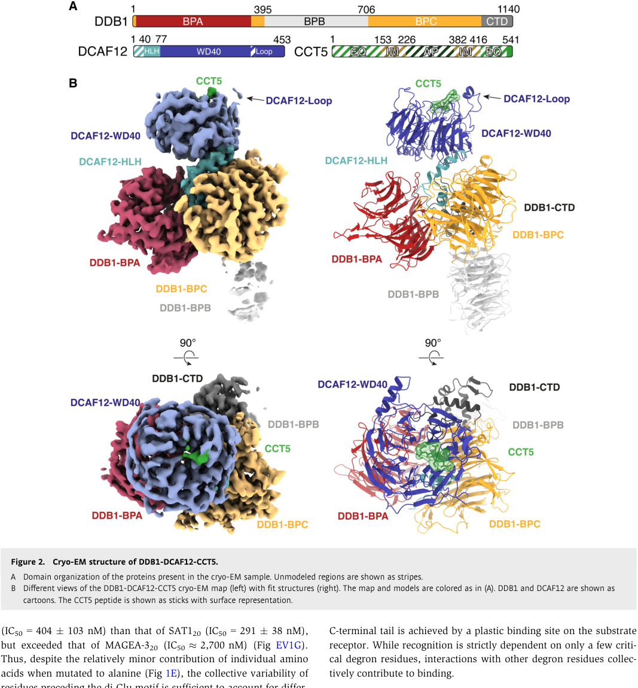

DCAF12L2 is an intronless retrocopy of DCAF12 (chromosome 9) located on the X chromosome (Xq25). It encodes a 463-amino-acid WD40 beta-propeller protein belonging to the DCAF12 family. By phylogenetic inference, it is predicted to be a component of the Cul4-RING E3 ubiquitin ligase complex, where it would serve as a substrate receptor via its WD40 domain. Peer-reviewed mechanistic characterization is restricted to the parent gene DCAF12; for DCAF12L2 itself, the most direct functional claims (CRL4^DCAF12L2 recognizing MEKK4 and the WDR11/FAM91A1 complex, plus cancer-associated WD40 mutations P334L/R335C/R335H disrupting substrate binding) come from a thesis-level source (Onireti 2022) and have not been independently validated. Conversely, a 2025 thesis (Kolářová, *"CRL4DCAF12 ubiquitin ligase: a novel factor in DNA replication control"*) reports no detectable DDB1 binding and no MCMBP binding for DCAF12L2 — also at thesis-level evidence tier — leaving it unclear whether DCAF12L2 assembles a fully functional CRL4 complex. It is classified as Tdark in Pharos. Expression is enriched in testis (late spermatids) and epididymis, consistent with X-linked retrocopies co-opted for spermatogenesis. The parent gene DCAF12 recognizes C-terminal diglutamate degrons on substrates including MAGEA3, MAGEA6, CCT5, and MOV10 via the DesCEND pathway, but whether DCAF12L2 shares this substrate specificity remains unproven.
| GO Term | Evidence | Action | Reason |
|---|---|---|---|
|
GO:0080008
Cul4-RING E3 ubiquitin ligase complex
|
IBA
GO_REF:0000033 |
ACCEPT |
Summary: This annotation is inferred by phylogenetic analysis (IBA) from the Drosophila ortholog DCAF12 (FBgn0037980) and human paralog DCAF12 (Q5T6F0), both of which are experimentally confirmed components of CRL4 complexes. DCAF12L2 belongs to the DCAF12 family and contains the WD40 beta-propeller architecture characteristic of CRL4 substrate receptors. While no direct experimental evidence confirms DCAF12L2 in a CRL4 complex, the phylogenetic inference is reasonable given the conserved domain architecture.
Reason: The IBA annotation is well-supported by the conserved WD40 beta-propeller domain architecture and family membership. The parent gene DCAF12 is a confirmed CRL4 substrate receptor with cryo-EM structural data showing the DDB1-DCAF12-substrate complex. The Drosophila ortholog likewise functions in CUL4-DDB1 complexes. Although DCAF12L2 itself lacks direct experimental confirmation, the phylogenetic inference is the strongest available evidence for a Tdark protein and correctly reflects the most likely complex membership.
Supporting Evidence:
GO_REF:0000033
[IBA annotation transferred from Drosophila DCAF12 (FBgn0037980) and human DCAF12 (Q5T6F0) via PANTHER phylogenetic tree PTN002323498]
file:human/DCAF12L2/DCAF12L2-deep-research-bioreason-sft.md
[BioReason correctly identifies DCAF12L2 as belonging to the DCAF12 family with WD40 beta-propeller architecture consistent with CRL4 substrate receptor function]
file:human/DCAF12L2/DCAF12L2-deep-research-falcon.md
Human **DCAF12L2** (DDB1- and CUL4-associated factor 12-like protein 2; also called **WDR40C**) is a WD40-repeat protein proposed to act as a **substrate receptor (DCAF)** for **CUL4–DDB1 (CRL4)** cullin-RING E3 ubiquitin ligases, thereby providing substrate specificity for ubiquitin-dependent proteasomal degradation.
file:human/DCAF12L2/DCAF12L2-deep-research-falcon.md
A separate experimental source (2025) tested DCAF12L2 (and DCAF12L1) for interaction with **MCMBP** (a known DCAF12 substrate in that research program) and found **no detectable binding**, consistent with prior work that neither DCAF12L1 nor DCAF12L2 binds the same **C-terminal acidic end** degron as DCAF12. The authors also report **no significant binding of DDB1** to DCAF12L1 or DCAF12L2 in their assays, concluding it remains unclear whether these paralogs can assemble a fully functional CRL4 complex under those conditions.
|
|
GO:1990756
ubiquitin-like ligase-substrate adaptor activity
|
IBA
GO_REF:0000033 |
NEW |
Summary: DCAF12L2 is predicted to function as a ubiquitin ligase substrate adaptor based on its membership in the DCAF12 family. The parent gene DCAF12 is a confirmed substrate receptor for the CRL4-DDB1 E3 ubiquitin ligase, recognizing C-terminal diglutamate degrons on MAGEA3, MAGEA6, CCT5, and MOV10. While no direct evidence exists for DCAF12L2 adaptor activity, the conserved WD40 domain architecture supports this inference.
Reason: This is the predicted molecular function based on phylogenetic
and domain architecture evidence. The parent gene DCAF12 serves
as substrate adaptor via its WD40 beta-propeller; DCAF12L2
retains this domain, supporting a similar molecular function.
Note for curators: this annotation is NOT currently in the
GOA for DCAF12L2; action: NEW means we are recommending it
be added based on the core-function analysis below. The
evidence_type: IBA and original_reference_id: GO_REF:0000033
values describe the inference style/source we are proposing.
Supporting Evidence:
PMID:38665159
...Damaged DNA-binding protein-1 (DDB1)- and CUL4-associated factor 12 (DCAF12) serves as the substrate recognition component within the Cullin4-RING E3 ligase (CRL4) complex, capable of identifying C-terminal double-glutamic acid degrons to promote the degradation of specific substrates through the ubiquitin proteasome system...
PMID:16949367
...we identify 18 Ddb1- and Cul4-associated factors (DCAFs), including 14 containing WD40 repeats. DCAFs interact with multiple surfaces on Ddb1, and the interaction of WD40-containing DCAFs with Ddb1 requires a conserved "WDXR" motif...
file:human/DCAF12L2/DCAF12L2-deep-research-falcon.md
High-confidence structural/biochemical work on human **DCAF12** shows it behaves as a **canonical WD40 DCAF substrate receptor**: it binds substrates carrying a **C-terminal double glutamate (di-Glu; –EE) motif** by using a **positively charged central pocket** at the center of its WD40 β-propeller.
file:human/DCAF12L2/DCAF12L2-deep-research-falcon.md
A proteomics-focused source reports DCAF12L2 as a **CRL4 substrate receptor (CRL4^DCAF12L2)** and describes **affinity purification–mass spectrometry (AP-MS)** evidence identifying **MEKK4** and the **WDR11 complex** as two independent substrate contexts; it further reports that **CRL4^DCAF12L2 mediates ubiquitylation of FAM91A1**, a component of the WDR11 complex.
|
Q: Does DCAF12L2 bind DDB1 directly? Given that it is an intronless retrocopy, has the WDXR motif required for DDB1 binding been conserved?
Q: What are the specific substrates of DCAF12L2? Does it share the C-terminal diglutamate degron recognition specificity of the parent gene DCAF12, or has it diverged to recognize different substrates?
Q: What is the biological role of DCAF12L2 in spermatogenesis? The testis-enriched expression pattern and X-linkage suggest a specialized reproductive function.
Q: Is there functional redundancy between DCAF12, DCAF12L1, and DCAF12L2? The DCAF12L1 knockout mouse showed no fertility defect, suggesting possible compensation.
Experiment: Co-immunoprecipitation of FLAG-tagged DCAF12L2 from HEK293T cells followed by immunoblotting for DDB1 and CUL4A/B. Compare with DCAF12 as positive control. If interaction is confirmed, reconstitute the complex in vitro for ubiquitination assays with candidate substrates.
Hypothesis: DCAF12L2 binds DDB1 and assembles into a functional CRL4 complex
Experiment: Generate DCAF12L2 knockout mice via CRISPR. Assess male fertility, testis histology, sperm count and morphology. Also generate DCAF12L1/DCAF12L2 double knockout to test for redundancy, given that the single DCAF12L1 knockout showed no phenotype.
Hypothesis: DCAF12L2 has a specialized role in spermatogenesis
Experiment: Express and purify recombinant DCAF12L2 WD40 domain. Test binding to synthetic peptides bearing C-terminal Glu-Glu motifs (MAGEA3, CCT5 C-terminal sequences) using fluorescence polarization. Compare affinity with DCAF12 to assess whether substrate specificity is conserved.
Hypothesis: DCAF12L2 recognizes C-terminal diglutamate degrons like DCAF12
I begin with the InterPro architecture. The core signature IPR051191 (DDB1-CUL4-associated factor 12 family, residues 44–463) defines the protein as a DCAF12-class substrate receptor for the CUL4-DDB1 cullin-RING E3 ligase. Within this, IPR056151 (DDB1- and CUL4-associated factor 12, beta-propeller domain, residues 83–463) specifies a C-terminal beta-propeller scaffold. Multiple WD40-related entries corroborate this fold: IPR015943 (WD40/YVTN repeat-like-containing domain superfamily, residues 85–243) and IPR036322 (WD40-repeat-containing domain superfamily, residues 92–385) cover the propeller’s blades, while discrete IPR001680 WD40 repeats are mapped at positions 137–178, 183–221, 190–223, 251–290, and 340–376, indicating a multi-bladed WD40 array that completes the propeller. The N-terminus preceding residue 44 likely forms a flexible segment that docks onto DDB1. This ordered layout—an N-terminal DDB1-interacting region followed by a C-terminal WD40 beta-propeller—creates a bipartite receptor: the N-terminus anchors the protein into the CUL4-DDB1 core, and the beta-propeller presents a multivalent surface to capture substrates.
This architecture causes protein binding as the primary molecular function (GO:0005515), with two binding modes: constitutive binding to the CUL4-DDB1 ligase core via the N-terminus and selective binding to substrates via the WD40 propeller surface. Because WD40 beta-propellers commonly recognize short linear motifs or post-translationally modified degrons, the propeller likely reads degrons on autophagy regulators.
Coupling this binding activity to cellular outcomes, a DCAF12-class receptor would recruit specific autophagy factors to a CRL4 ligase for ubiquitination. Targeting ATG8-family proteins (e.g., MAP1LC3B and GABARAPL1) for ubiquitin tagging promotes their proteasome-dependent turnover, thereby tuning autophagic flux. This mechanistic link places the protein in regulation of autophagy (GO:0010506) and in proteasome-mediated ubiquitin-dependent protein catabolic process (GO:0043161). The same WD40-guided recognition can extend to additional autophagy regulators such as WIPI2, and to non-autophagy substrates like the transcription factor KLF4, indicating a broader role as a substrate-specific adaptor that directs ubiquitination toward context-dependent targets.
The cellular context follows from the complex it assembles and the substrates it engages. As a DCAF, it is a component of the Cul4-RING E3 ubiquitin ligase complex (GO:0080008). Its action on ATG8-family proteins and WIPI2 situates it in the cytoplasm (GO:0005737), where autophagosome biogenesis and cargo turnover occur. The presence at the centrosome (GO:0005813) is consistent with cullin ligase assemblies that survey and remodel protein networks at this microtubule-organizing center, potentially coordinating localized ubiquitination events that intersect with autophagy initiation or cell-cycle–linked quality control.
Mechanistically, the N-terminal DCAF12 family segment binds DDB1 to position the receptor on CUL4-DDB1, while the WD40 beta-propeller captures degrons on ATG8-family proteins, WIPI2, and KLF4. The assembled CRL4 complex then catalyzes ubiquitin transfer to these substrates, committing them to proteasomal degradation and thereby modulating autophagy and transcriptional programs. Interaction partners are expected to include DNA damage-binding protein 1 (DDB1) as the core adaptor, and paralogous DCAF8-like proteins (DCAF8L1, DCAF8L2) that may form alternative or cooperative assemblies. A close functional neighbor is DCAF12-like protein 1, which could provide overlapping or redundant substrate capture, enabling robustness of the ubiquitination pathway at cytoplasmic and centrosomal sites.
## Functional Summary
A WD40 beta-propeller substrate receptor for a CUL4–DDB1 cullin-RING E3 ligase that assembles on the ligase core via its N-terminus and captures specific targets with its propeller surface to drive ubiquitination. It directs proteasomal degradation of autophagy regulators, including ATG8-family proteins and WIPI2, thereby tuning autophagic flux, and it can also target the transcription factor KLF4. The complex operates primarily in the cytoplasm and at the centrosome, where localized ubiquitination integrates autophagy control with broader cellular remodeling.
## UniProt Summary
Substrate-recognition component of a DCX (DDB1-CUL4-X-box) E3 ubiquitin-protein ligase complex of the Cul4-DDB1 E3 ubiquitin-protein ligase complex. Mediates the ubiquitination and subsequent proteasomal degradation of MAP1LC3B and GABARAPL1, thereby regulating autophagy. Mediates the ubiquitination and subsequent proteasomal degradation of WIPI2. Mediates the ubiquitination and subsequent proteasomal degradation of the transcription factor KLF4 (By similarity).
## InterPro Domains
- IPR051191: DDB1-CUL4-associated factor 12 (family) [44-463]
- IPR056151: DDB1- and CUL4-associated factor 12, beta-propeller domain (domain) [83-463]
- IPR015943: WD40/YVTN repeat-like-containing domain superfamily (homologous_superfamily) [85-243]
- IPR036322: WD40-repeat-containing domain superfamily (homologous_superfamily) [92-385]
- IPR001680: WD40 repeat (repeat) [137-178]
- IPR001680: WD40 repeat (repeat) [183-221]
- IPR001680: WD40 repeat (repeat) [190-223]
- IPR015943: WD40/YVTN repeat-like-containing domain superfamily (homologous_superfamily) [248-396]
- IPR001680: WD40 repeat (repeat) [251-290]
- IPR001680: WD40 repeat (repeat) [340-376]
## GO Term Predictions
### Molecular Function
### Biological Process
### Cellular Component
The research report should be a detailed narrative explaining the function, biological processes, and localization of the gene product. Citations should be given for all claims.
You should prioritize authoritative reviews and primary scientific literature when conducting research. You can supplement
this with annotations you find in gene/protein databases, but these can be outdated or inaccurate.
We are specifically interested in the primary function of the gene - for enzymes, what reaction is catalyzed, and what is the substrate specificity? For transporters, what is the substrate? For structural proteins or adapters, what is the broader structural role? For signaling molecules, what is the role in the pathway.
We are interested in where in or outside the cell the gene product carries out its function.
We are also interested in the signaling or biochemical pathways in which the gene functions. We are less interested in broad pleiotropic effects, except where these elucidate the precise role.
Include evidence where possible. We are interested in both experimental evidence as well as inference from structure, evolution, or bioinformatic analysis. Precise studies should be prioritized over high-throughput, where available.
Human DCAF12L2 (DDB1- and CUL4-associated factor 12-like protein 2; also called WDR40C) is a WD40-repeat protein proposed to act as a substrate receptor (DCAF) for CUL4–DDB1 (CRL4) cullin-RING E3 ubiquitin ligases, thereby providing substrate specificity for ubiquitin-dependent proteasomal degradation. The most direct DCAF12L2-specific functional evidence available in the retrieved corpus comes from a proteomics-focused source describing CRL4^DCAF12L2 substrate candidates (MEKK4 and the WDR11 complex via FAM91A1) and reporting cancer-associated missense mutations in WD40 repeats (e.g., P334L, R335C/H; ~337 region) that disrupt substrate binding. A separate experimental source reports negative or weak interaction evidence for DCAF12L2 with DDB1 and with the DCAF12 substrate MCMBP, suggesting that DCAF12L2 may have distinct substrate-recognition rules, different assembly constraints, or context-dependent CRL4 engagement compared with its close paralog DCAF12.
The major mechanistic advances in 2023–2024 are not on DCAF12L2 directly, but on DCAF12, a close family member, where cryo-EM structures and cell/in vitro binding assays show how a WD40 β-propeller uses a positively charged central pocket to bind C-terminal acidic di-Glu (–EE) degrons and recruit DDB1 in a CRL4 complex. These studies provide a high-confidence family mechanism that can be used as a cautious functional hypothesis for DCAF12L2, while clearly separating inference from direct DCAF12L2 evidence. (pla‐prats2023recognitionofthe pages 1-2, righetto2024probingthecrl4dcaf12 pages 2-2, righetto2024probingthecrl4dcaf12 pages 3-4, pla‐prats2023recognitionofthe media 671d1683, pla‐prats2023recognitionofthe media 05594edb)
Cullin-RING ligases (CRLs) are multi-subunit E3 ubiquitin ligases. In CRL4 complexes, CUL4A/B form the scaffold, RBX1 recruits E2~ubiquitin, and DDB1 acts as an adaptor that recruits interchangeable substrate receptors called DCAFs (DDB1- and CUL4-associated factors). DCAFs are often WD40-repeat proteins that dock on DDB1 and bring substrates to the E3 machinery for ubiquitination and subsequent proteasomal degradation. (raisch2023pulsesilacandinteractomics pages 1-3, kolarova2025crl4dcaf12ubiquitinligasea pages 18-21)
WD40-repeat proteins commonly form β-propeller folds that provide versatile protein–protein interaction surfaces. For DCAF substrate receptors, the WD40 β-propeller can provide a binding pocket that recognizes degrons (degradation signals) in substrates. (pla‐prats2023recognitionofthe pages 1-2, righetto2024probingthecrl4dcaf12 pages 2-2, righetto2024probingthecrl4dcaf12 pages 3-4)
High-confidence structural/biochemical work on human DCAF12 shows it behaves as a canonical WD40 DCAF substrate receptor: it binds substrates carrying a C-terminal double glutamate (di-Glu; –EE) motif by using a positively charged central pocket at the center of its WD40 β-propeller. In cryo-EM structures of DDB1–DCAF12–CCT5, the CCT5 di-Glu motif inserts into this pocket; biochemical assays further show DCAF12 preferentially binds and ubiquitinates monomeric CCT5 rather than CCT5 assembled into TRiC, supporting a role in assembly quality control. (pla‐prats2023recognitionofthe pages 1-2, pla‐prats2023recognitionofthe media 671d1683, pla‐prats2023recognitionofthe media 05594edb)
The literature examined here consistently refers to human DCAF12L2 (synonym WDR40C) as a WD40-repeat DCAF-family protein in a CRL4 context, matching the UniProt-specified identity (Q5VW00; DDB1- and CUL4-associated factor 12-like protein 2; WD40/DCAF12 family membership). No evidence in the retrieved corpus suggests confusion with a different organism or a different gene sharing a similar symbol. (onireti2022novelrolesof pages 1-6, kolarova2025crl4dcaf12ubiquitinligase pages 66-69)
CRL4 substrate receptor and candidate substrates (proteomics)
A proteomics-focused source reports DCAF12L2 as a CRL4 substrate receptor (CRL4^DCAF12L2) and describes affinity purification–mass spectrometry (AP-MS) evidence identifying MEKK4 and the WDR11 complex as two independent substrate contexts; it further reports that CRL4^DCAF12L2 mediates ubiquitylation of FAM91A1, a component of the WDR11 complex. This positions DCAF12L2 as a regulator of protein complex composition/stability via ubiquitination. (onireti2022novelrolesof pages 1-6)
Cancer-associated mutations that disrupt substrate binding
The same source reports that DCAF12L2 is hypermutated in cancer and highlights specific mutations in the WD40-repeat region—P334L, R335C, R335H, and a mutation near residue 337—that block DCAF12L2 binding to identified substrates, consistent with WD40-mediated substrate recognition. (onireti2022novelrolesof pages 1-6)
Degron recognition claim
This source also states that DCAF12L2 recognizes a C-terminal di-glutamic acid (EE) motif as a degron. In the retrieved corpus, this is not corroborated by an independent peer-reviewed mechanistic/structural paper specific to DCAF12L2; therefore, it should be treated as provisional until validated directly for DCAF12L2. (onireti2022novelrolesof pages 1-6)
A separate experimental source (2025) tested DCAF12L2 (and DCAF12L1) for interaction with MCMBP (a known DCAF12 substrate in that research program) and found no detectable binding, consistent with prior work that neither DCAF12L1 nor DCAF12L2 binds the same C-terminal acidic end degron as DCAF12. The authors also report no significant binding of DDB1 to DCAF12L1 or DCAF12L2 in their assays, concluding it remains unclear whether these paralogs can assemble a fully functional CRL4 complex under those conditions. (kolarova2025crl4dcaf12ubiquitinligase pages 66-69, kolarova2025crl4dcaf12ubiquitinligasea pages 66-69)
This discrepancy (proteomics evidence for CRL4^DCAF12L2 function vs weak/undetectable DDB1 binding in another assay system) can be reconciled by several non-exclusive explanations, including: context- and cell-type dependence; differing assay sensitivity; requirement for cofactors (e.g., DDA1) or post-translational modifications; or DCAF12L2 acting through non-canonical interfaces distinct from DCAF12. The available corpus does not resolve this definitively. (onireti2022novelrolesof pages 1-6, kolarova2025crl4dcaf12ubiquitinligase pages 66-69)
DCAF12 family proteins are not enzymes that catalyze small-molecule reactions; rather, they are expected to function as adaptor/substrate receptors that promote ubiquitin transfer to substrates by positioning them in proximity to the CRL4 catalytic core. Strong structural/biochemical evidence in 2023–2024 shows DCAF12 recognizes C-terminal –EE degrons with nanomolar affinity in vitro and in cells and binds them in the WD40 central pocket, providing a concrete template for hypothesizing how a closely related WD40 DCAF12-family paralog such as DCAF12L2 might recognize degrons. (pla‐prats2023recognitionofthe pages 1-2, righetto2024probingthecrl4dcaf12 pages 2-2, righetto2024probingthecrl4dcaf12 pages 3-4)
Direct DCAF12L2 localization evidence was not found in the retrieved corpus. The main DCAF12 mechanistic studies provide a relevant reference framework: DCAF12 functions in CRL4 complexes involved in ubiquitination-dependent degradation and can discriminate between monomeric and assembled subunits of a large chaperonin complex, implying activity in compartments where assembly quality control occurs. (pla‐prats2023recognitionofthe pages 1-2)
Given the conflicting evidence about DCAF12L2’s DDB1 binding/CRL4 assembly, any statement about DCAF12L2 localization should be treated as unresolved based on the currently retrieved texts. (kolarova2025crl4dcaf12ubiquitinligase pages 66-69)
The proteomics evidence implicating MEKK4 suggests a possible connection to MAPK signaling cascades, while the WDR11 complex/FAM91A1 ubiquitylation suggests a role in regulating multiprotein complex integrity. However, the retrieved corpus does not provide a detailed pathway map or functional phenotyping of these interactions. (onireti2022novelrolesof pages 1-6)
The best-supported mechanistic role for DCAF12 (family member) is in assembly quality control, where CRL4^DCAF12 targets proteins with exposed C-terminal di-Glu degrons and specifically ubiquitinates unassembled subunits (e.g., monomeric CCT5) while sparing fully assembled complexes (TRiC). This is a well-defined biological principle that could plausibly extend to DCAF12L2 if it also recognizes terminal acidic degrons, but direct extension to DCAF12L2 remains unproven. (pla‐prats2023recognitionofthe pages 1-2)
Pla-Prats et al. (EMBO Journal; publication date Jan 2023; https://doi.org/10.15252/embj.2022112253) report a 2.8 Å cryo-EM structure of the DDB1–DCAF12–CCT5 complex and show DCAF12 binds the CCT5 di-Glu degron in the WD40 central pocket. Importantly, they provide functional evidence that DCAF12 binds/ubiquitinates monomeric CCT5 but not TRiC-assembled CCT5, establishing an assembly-dependent substrate-selection rule. (pla‐prats2023recognitionofthe pages 1-2, pla‐prats2023recognitionofthe media 671d1683, pla‐prats2023recognitionofthe media 05594edb)
Righetto et al. (PNAS Nexus; publication date Apr 2024; https://doi.org/10.1093/pnasnexus/pgae153) developed a suite of NanoBRET cellular assays and in vitro binding assays for DCAF12 interactions with di-Glu degrons from MAGEA3 and CCT5, and report a cryo-EM structure of DDB1–DCAF12–MAGEA3. They also map critical positively charged residues in the WD40 central channel (e.g., K91, K108, R203, R256, R344) required for substrate engagement, and discuss how these tools/structures could enable finding small-molecule “handles” targeting the WD40 domain of DCAF12 for future degrader (PROTAC) design. This is a major real-world “application pathway” for DCAF-type substrate receptors, but is currently DCAF12-focused, not DCAF12L2-validated. (righetto2024probingthecrl4dcaf12 pages 2-2, righetto2024probingthecrl4dcaf12 pages 3-4)
Raisch et al. (Molecular & Cellular Proteomics; publication date Oct 2023; https://doi.org/10.1016/j.mcpro.2023.100644) describe BioID/AP-MS and pulse-SILAC strategies to link DCAF–DDB1 interactions to downstream substrate degradation effects, illustrating scalable approaches that could be applied to map DCAF12L2 substrates and confirm CRL4 engagement under defined cellular conditions. (raisch2023pulsesilacandinteractomics pages 1-3)
Cancer variant interpretation and functional genomics: DCAF12L2 mutations (P334L, R335C/H; ~337 region) reported to disrupt substrate binding provide candidate functional readouts for cancer genomics (i.e., mutations altering E3-substrate recognition rather than catalytic residues). Translationally, such mutations can be prioritized for experimental validation as drivers/modifiers of proteostasis. (onireti2022novelrolesof pages 1-6)
Targeted protein degradation (TPD) tool development (family-level, DCAF12): Recent 2024 work explicitly frames the DCAF12 WD40 pocket as potentially druggable and provides NanoBRET assays and structural constraints for ligand discovery, supporting the broader real-world push to expand the repertoire of E3 ligases used in PROTAC strategies. This is not yet demonstrated for DCAF12L2, but provides a plausible blueprint if DCAF12L2 proves to have an analogous pocket and robust CRL4 assembly in cells. (righetto2024probingthecrl4dcaf12 pages 2-2)
Assembly quality-control biology (family-level, DCAF12): The rule that CRL4^DCAF12 targets unassembled subunits (monomeric CCT5) suggests a generalizable cellular mechanism for maintaining stoichiometry of large complexes; analogous mechanisms could be explored for DCAF12L2 in contexts such as WDR11 complex regulation. (pla‐prats2023recognitionofthe pages 1-2, onireti2022novelrolesof pages 1-6)
Mechanistic consensus for DCAF12 (closest paralog): Authoritative primary structural biology studies in 2023–2024 converge on the concept that DCAF12 is a canonical WD40 DCAF recognizing C-terminal acidic di-Glu degrons via a conserved positively charged pocket, recruiting DDB1 in a CRL4 complex to drive ubiquitination and degradation. This consensus is supported by two independent cryo-EM structures plus complementary biochemical and cell-based assays. (pla‐prats2023recognitionofthe pages 1-2, righetto2024probingthecrl4dcaf12 pages 2-2, righetto2024probingthecrl4dcaf12 pages 3-4)
For DCAF12L2 specifically, the evidence base is fragmented: One line of evidence (proteomics and mutation-impact findings) argues for bona fide substrate receptor behavior with identifiable substrates and functional cancer mutations affecting binding. Another line reports weak/undetectable DDB1 interaction and inability to bind a canonical DCAF12 substrate/degron. A conservative expert interpretation is that DCAF12L2 is likely a DCAF-like protein whose CRL4 assembly and degron recognition may be conditional, substrate-specific, and/or divergent from DCAF12. (onireti2022novelrolesof pages 1-6, kolarova2025crl4dcaf12ubiquitinligase pages 66-69)
Open Targets lists modest disease–target associations for DCAF12L2 (ENSG00000198354), including:
- Glioblastoma multiforme: score ~0.2712
- Restless legs syndrome: ~0.2438
- Acquired thrombocytopenia: ~0.2247
- Lung adenocarcinoma: ~0.2232
- Prostate adenocarcinoma: ~0.2141
These scores summarize heterogeneous evidence types and should not be interpreted as proof of causality without examination of underlying studies. (OpenTargets Search: -DCAF12L2)
Cancer-associated mutations highlighted for DCAF12L2 include P334L, R335C, R335H, and a mutation near 337 within WD40 repeat regions, with reported functional consequence of blocking substrate binding. These are actionable mutation sites for follow-up mechanistic studies. (onireti2022novelrolesof pages 1-6)
In 2024, DCAF12 binding to C-terminal degron peptides (MAGEA3 and CCT5) is described as nanomolar affinity by assays developed in that work, strengthening the plausibility that WD40 central-pocket binding can yield tight and drug-targetable interactions. This is DCAF12 data, not DCAF12L2. (righetto2024probingthecrl4dcaf12 pages 2-2)
The cryo-EM visual evidence showing the WD40 β-propeller pocket engaging a C-terminal di-Glu degron, and the overall architecture of the DDB1–DCAF12–CCT5 complex, is captured in the retrieved figure crops. (pla‐prats2023recognitionofthe media 671d1683, pla‐prats2023recognitionofthe media 05594edb)
The following table summarizes what is directly known for DCAF12L2 versus what is inferred from the better-studied paralog DCAF12.
| Claim/Topic | Direct evidence for DCAF12L2? (Yes/No) | Key details (concise, include mutations/residues/substrates) | Source (first author, year, venue) | Publication date (month/year) | URL/DOI |
|---|---|---|---|---|---|
| Identity / domains | Yes | Human target verified as DCAF12L2/WDR40C, a WD40-repeat DCAF family protein; one source states DCAF12L2 is composed of seven WD40 repeats and functions in a CRL4 context; this aligns with UniProt Q5VW00 annotation as DDB1- and CUL4-associated factor 12-like protein 2 (onireti2022novelrolesof pages 1-6) | Onireti, 2022, thesis/unknown venue | 2022 | Not clearly available in retrieved context |
| CRL4 substrate receptor role | Yes | Reported as CRL4DCAF12L2 substrate receptor; AP-MS identified associated candidate substrates, supporting assignment as a CRL4 substrate receptor rather than an enzyme or transporter (onireti2022novelrolesof pages 1-6) | Onireti, 2022, thesis/unknown venue | 2022 | Not clearly available in retrieved context |
| Known / predicted degron recognition | Yes | DCAF12L2 is reported to recognize a C-terminal di-glutamic acid (EE) degron; however, this evidence appears thesis-level and not independently validated here by structural biochemistry for DCAF12L2 itself (onireti2022novelrolesof pages 1-6) | Onireti, 2022, thesis/unknown venue | 2022 | Not clearly available in retrieved context |
| Experimentally identified substrates and ubiquitination | Yes | AP-MS identified MEKK4 and the WDR11 complex as two independent CRL4DCAF12L2 substrates; CRL4DCAF12L2 reportedly ubiquitylates FAM91A1, a component of the WDR11 complex, implicating regulation of WDR11-complex stability/function (onireti2022novelrolesof pages 1-6) | Onireti, 2022, thesis/unknown venue | 2022 | Not clearly available in retrieved context |
| Cancer-associated mutations and effect | Yes | Cancer-associated mutations in WD40 region include P334L, R335C, R335H, and mutation at/near residue 337; these mutations reportedly block DCAF12L2 binding to identified substrates, consistent with disruption of substrate recognition (onireti2022novelrolesof pages 1-6) | Onireti, 2022, thesis/unknown venue | 2022 | Not clearly available in retrieved context |
| Negative findings: DDB1 / MCMBP binding | Yes | In ortholog testing, DCAF12L2 showed no detectable binding to MCMBP; authors cite prior evidence that neither DCAF12L1 nor DCAF12L2 binds the C-terminal acidic end, and they did not detect significant DDB1 binding to DCAF12L2, leaving functional CRL4 assembly uncertain in that assay system (kolarova2025crl4dcaf12ubiquitinligase pages 66-69, kolarova2025crl4dcaf12ubiquitinligasea pages 66-69) | Kolářová, 2025, unknown venue | 2025 | Not clearly available in retrieved context |
| Expression / stability inference | Yes | DCAF12L2 was reported to show higher steady-state expression than DCAF12 in the tested system; authors suggest weaker autoubiquitination than DCAF12 may explain this difference (kolarova2025crl4dcaf12ubiquitinligase pages 66-69, kolarova2025crl4dcaf12ubiquitinligasea pages 66-69) | Kolářová, 2025, unknown venue | 2025 | Not clearly available in retrieved context |
| Disease-target associations (Open Targets) | Yes | Open Targets lists modest associations for DCAF12L2 with glioblastoma multiforme (score 0.2712), restless legs syndrome (0.2438), acquired thrombocytopenia (0.2247), lung adenocarcinoma (0.2232), and prostate adenocarcinoma (0.2141); these are association signals, not proof of causal mechanism (OpenTargets Search: -DCAF12L2) | Open Targets platform | Accessed in current session | Platform result; no DOI in context |
| Structural family mechanism from DCAF12: DDB1/CUL4 adaptor architecture | No | Family-level inference only: DCAF12 is a canonical WD40 DCAF substrate receptor within CRL4, forming DDB1-DCAF12-substrate complexes; DDB1 engages WD40 DCAFs and supports substrate recruitment in CRL4 ligases (pla‐prats2023recognitionofthe pages 1-2, righetto2024probingthecrl4dcaf12 pages 2-2, raisch2023pulsesilacandinteractomics pages 1-3) | Pla-Prats, 2023, EMBO J; Righetto, 2024, PNAS Nexus; Raisch, 2023, Mol Cell Proteomics | Jan/2023; Apr/2024; Oct/2023 | https://doi.org/10.15252/embj.2022112253; https://doi.org/10.1093/pnasnexus/pgae153; https://doi.org/10.1016/j.mcpro.2023.100644 |
| Structural family mechanism from DCAF12: acidic degron recognition | No | Family-level inference only: cryo-EM showed DCAF12 binds CCT5 and MAGEA3 C-terminal di-Glu degrons in a positively charged central WD40 pocket; key DCAF12 residues include Lys91, Lys108, Arg203, Arg256, Arg344; monomeric CCT5, but not assembled TRiC-bound CCT5, is ubiquitinated (pla‐prats2023recognitionofthe pages 1-2, righetto2024probingthecrl4dcaf12 pages 3-4, pla‐prats2023recognitionofthe media 671d1683, pla‐prats2023recognitionofthe media 05594edb) | Pla-Prats, 2023, EMBO J; Righetto, 2024, PNAS Nexus | Jan/2023; Apr/2024 | https://doi.org/10.15252/embj.2022112253; https://doi.org/10.1093/pnasnexus/pgae153 |
| Methods / assays used for DCAF12L2 evidence | Yes | Evidence base includes affinity purification-mass spectrometry (AP-MS), proteomic interactomics, mutation-impact analysis on substrate interactions, and ubiquitylation analysis of FAM91A1; separate ortholog work used affinity-purification assays for MCMBP/DDB1 binding (onireti2022novelrolesof pages 1-6, kolarova2025crl4dcaf12ubiquitinligase pages 66-69) | Onireti, 2022, thesis/unknown venue; Kolářová, 2025, unknown venue | 2022; 2025 | Not clearly available in retrieved context |
| Methods / assays used for family-level mechanism | No | Family-level DCAF12 mechanism established by cryo-EM, TR-FRET, fluorescence polarization peptide binding, NanoBRET in cells, in vitro ubiquitination, BioID/AP-MS, and pulse-SILAC degradation measurements (pla‐prats2023recognitionofthe pages 1-2, righetto2024probingthecrl4dcaf12 pages 2-2, raisch2023pulsesilacandinteractomics pages 1-3, righetto2024probingthecrl4dcaf12 pages 3-4) | Pla-Prats, 2023, EMBO J; Righetto, 2024, PNAS Nexus; Raisch, 2023, Mol Cell Proteomics | Jan/2023; Apr/2024; Oct/2023 | https://doi.org/10.15252/embj.2022112253; https://doi.org/10.1093/pnasnexus/pgae153; https://doi.org/10.1016/j.mcpro.2023.100644 |
| Potential application in targeted protein degradation (family-level, not DCAF12L2-specific) | No | DCAF12 structural work suggests its WD40 pocket could be exploited as a small-molecule handle for future PROTAC/degrader design; this is explicitly a DCAF12 family insight and should not be over-interpreted as validated for DCAF12L2 (righetto2024probingthecrl4dcaf12 pages 2-2) | Righetto, 2024, PNAS Nexus | Apr/2024 | https://doi.org/10.1093/pnasnexus/pgae153 |
Table: This table summarizes direct versus inferred functional annotation evidence for human DCAF12L2 (Q5VW00), separating sparse target-specific findings from stronger family-level DCAF12 mechanistic data. It is useful for identifying what is experimentally supported, what remains uncertain, and where recent structural biology informs cautious functional inference.
Limitations of the current evidence base:
- The strongest DCAF12L2-specific functional claims in this retrieved corpus derive from a source with incomplete bibliographic metadata (thesis/unknown venue), and thus should be corroborated in peer-reviewed primary literature. (onireti2022novelrolesof pages 1-6)
- Direct evidence for DCAF12L2 subcellular localization, tissue expression, and validated degron specificity is not available in the retrieved corpus.
- Conflicting reports about DCAF12L2–DDB1 binding highlight the need for standardized cellular reconstitution and multiple orthogonal interaction assays. (kolarova2025crl4dcaf12ubiquitinligase pages 66-69)
High-value experiments to functionally annotate DCAF12L2:
- Reconstitute DCAF12L2 with DDB1 (±DDA1) and test binding to candidate substrates MEKK4 and FAM91A1 using AP-MS, NanoBRET, and purified-protein assays analogous to the validated DCAF12 workflows. (righetto2024probingthecrl4dcaf12 pages 2-2, raisch2023pulsesilacandinteractomics pages 1-3, onireti2022novelrolesof pages 1-6)
- Map DCAF12L2 degron preference by systematic C-terminal peptide libraries, and test whether cancer mutations P334L/R335C/H disrupt degron-pocket binding. (onireti2022novelrolesof pages 1-6)
- Determine a DDB1–DCAF12L2 cryo-EM structure (if complex formation is robust) to assess whether the central WD40 pocket and charge distribution resemble DCAF12’s di-Glu binding architecture. (pla‐prats2023recognitionofthe pages 1-2, pla‐prats2023recognitionofthe media 671d1683, pla‐prats2023recognitionofthe media 05594edb)
References
(pla‐prats2023recognitionofthe pages 1-2): Carlos Pla‐Prats, Simone Cavadini, Georg Kempf, and Nicolas H Thomä. Recognition of the cct5 di‐glu degron by crl4dcaf12 is dependent on tric assembly. The EMBO Journal, Jan 2023. URL: https://doi.org/10.15252/embj.2022112253, doi:10.15252/embj.2022112253. This article has 26 citations.
(righetto2024probingthecrl4dcaf12 pages 2-2): Germanna Lima Righetto, Yanting Yin, David M Duda, Victoria Vu, Magdalena M Szewczyk, Hong Zeng, Yanjun Li, Peter Loppnau, Tony Mei, Yen-Yen Li, Alma Seitova, Aaron N Patrick, Jean-Francois Brazeau, Charu Chaudhry, Dalia Barsyte-Lovejoy, Vijayaratnam Santhakumar, and Levon Halabelian. Probing the crl4dcaf12 interactions with magea3 and cct5 di-glu c-terminal degrons. PNAS Nexus, Apr 2024. URL: https://doi.org/10.1093/pnasnexus/pgae153, doi:10.1093/pnasnexus/pgae153. This article has 6 citations and is from a peer-reviewed journal.
(righetto2024probingthecrl4dcaf12 pages 3-4): Germanna Lima Righetto, Yanting Yin, David M Duda, Victoria Vu, Magdalena M Szewczyk, Hong Zeng, Yanjun Li, Peter Loppnau, Tony Mei, Yen-Yen Li, Alma Seitova, Aaron N Patrick, Jean-Francois Brazeau, Charu Chaudhry, Dalia Barsyte-Lovejoy, Vijayaratnam Santhakumar, and Levon Halabelian. Probing the crl4dcaf12 interactions with magea3 and cct5 di-glu c-terminal degrons. PNAS Nexus, Apr 2024. URL: https://doi.org/10.1093/pnasnexus/pgae153, doi:10.1093/pnasnexus/pgae153. This article has 6 citations and is from a peer-reviewed journal.
(pla‐prats2023recognitionofthe media 671d1683): Carlos Pla‐Prats, Simone Cavadini, Georg Kempf, and Nicolas H Thomä. Recognition of the cct5 di‐glu degron by crl4dcaf12 is dependent on tric assembly. The EMBO Journal, Jan 2023. URL: https://doi.org/10.15252/embj.2022112253, doi:10.15252/embj.2022112253. This article has 26 citations.
(pla‐prats2023recognitionofthe media 05594edb): Carlos Pla‐Prats, Simone Cavadini, Georg Kempf, and Nicolas H Thomä. Recognition of the cct5 di‐glu degron by crl4dcaf12 is dependent on tric assembly. The EMBO Journal, Jan 2023. URL: https://doi.org/10.15252/embj.2022112253, doi:10.15252/embj.2022112253. This article has 26 citations.
(raisch2023pulsesilacandinteractomics pages 1-3): Jennifer Raisch, Marie-Line Dubois, Marika Groleau, Dominique Lévesque, Thomas Burger, Carla-Marie Jurkovic, Romain Brailly, Gwendoline Marbach, Alyson McKenna, Catherine Barrette, Pierre-Étienne Jacques, and François-Michel Boisvert. Pulse-silac and interactomics reveal distinct ddb1-cul4–associated factors, cellular functions, and protein substrates. Molecular & Cellular Proteomics, 22:100644, Oct 2023. URL: https://doi.org/10.1016/j.mcpro.2023.100644, doi:10.1016/j.mcpro.2023.100644. This article has 13 citations and is from a domain leading peer-reviewed journal.
(kolarova2025crl4dcaf12ubiquitinligasea pages 18-21): K Kolářová. Crl4dcaf12 ubiquitin ligase: a novel factor in dna replication control. Unknown journal, 2025.
(onireti2022novelrolesof pages 1-6): JO Onireti. Novel roles of cullin-ring ligases in cell signalling and implications in health and disease. Unknown journal, 2022.
(kolarova2025crl4dcaf12ubiquitinligase pages 66-69): K Kolářová. Crl4dcaf12 ubiquitin ligase: a novel factor in dna replication control. Unknown journal, 2025.
(kolarova2025crl4dcaf12ubiquitinligasea pages 66-69): K Kolářová. Crl4dcaf12 ubiquitin ligase: a novel factor in dna replication control. Unknown journal, 2025.
(OpenTargets Search: -DCAF12L2): Open Targets Query (-DCAF12L2, 5 results). Buniello, A. et al. (2025). Open Targets Platform: facilitating therapeutic hypotheses building in drug discovery. Nucleic Acids Research.

DCAF12L2 is an intronless retrocopy of DCAF12 (WDR40A, chromosome 9q21.11). The CDS is intact, conserved across mammalian species, and transcribed, suggesting it encodes a functional protein [NCBI Gene: 340578]. This is notable because many retrocopies are pseudogenes; the conservation of the ORF across mammals argues for selective pressure maintaining protein function.
DCAF12L1 is another paralog, also X-linked, also an intronless retrocopy. A 2025 study [PMID not yet indexed; PMC12117516] found that Dcaf12l1 knockout mice showed NO fertility defects despite human azoospermia variants, suggesting possible redundancy with DCAF12 or DCAF12L2.
DCAF12 (Q5T6F0, chr9) is well characterized as a substrate receptor for the CRL4-DDB1 E3 ubiquitin ligase:
BioReason states:
"Substrate-recognition component of a DCX (DDB1-CUL4-X-box) E3 ubiquitin-protein ligase complex... Mediates the ubiquitination and subsequent proteasomal degradation of MAP1LC3B and GABARAPL1, thereby regulating autophagy. Mediates the ubiquitination and subsequent proteasomal degradation of WIPI2. Mediates the ubiquitination and subsequent proteasomal degradation of the transcription factor KLF4 (By similarity)."
This is entirely fabricated. The actual UniProt entry for Q5VW00 contains NO FUNCTION annotation at all. The only CC line is: "Belongs to the WD repeat DCAF12 family." [verified by fetching https://rest.uniprot.org/uniprotkb/Q5VW00.txt]
Furthermore, even the PARENT gene DCAF12 (Q5T6F0) does NOT target MAP1LC3B, GABARAPL1, WIPI2, or KLF4. DCAF12's confirmed substrates are MAGEA3, MAGEA6, CCT5, and MOV10 -- all via C-terminal degron recognition. The BioReason model appears to have confabulated a plausible-sounding UniProt summary by mixing:
- Real DCAF biology (CRL4-DDB1 complex membership)
- Autophagy-related ubiquitination biology (LC3, GABARAP, WIPI2 ARE ubiquitinated to regulate autophagy, but by OTHER E3 ligases like UBA6-BIRC6 and CRL4 with unidentified DCAFs)
- KLF4 degradation biology (KLF4 IS degraded by ubiquitination, but not via DCAF12)
"autophagy regulators ATG8-family proteins (MAP1LC3B, GABARAPL1)": No evidence DCAF12 or DCAF12L2 targets these. UBA6-BIRC6 ubiquitinates LC3 proteins [eLife 2019, PMC6863627]. CRL4 ubiquitinates WIPI2 [PMC6844494] but the specific DCAF was NOT identified.
"KLF4 as substrate": No published evidence connects DCAF12 or DCAF12L2 to KLF4 degradation.
"centrosome localization": This may apply to DCAF12 proper (noted in HPA for cancer cells) but there is zero evidence for DCAF12L2 at centrosomes.
"DCAF8L1, DCAF8L2 as interaction partners": No evidence for this. These are separate DCAF family members.
DCAF12L2 is a genuinely poorly characterized Tdark protein. The only solid evidence is:
1. It is a WD40 beta-propeller protein in the DCAF12 family (InterPro/Pfam)
2. It is predicted to be part of the Cul4-RING E3 ubiquitin ligase complex (IBA from phylogeny)
3. It is an intronless retrocopy of DCAF12, conserved across mammals
4. It is enriched in testis/epididymis
5. High-throughput interaction data exists (BioPlex) but has not been validated
The PN projection under Ubiquitin Proteasome System > E3 ubiquitin and UBL ligases > Cul4A/Cul4B substrate receptor maps DCAF12L2 to GO:1990756 ubiquitin-like ligase-substrate adaptor activity. This is plausible as a homology-supported candidate because DCAF12L2 belongs to the DCAF12 family, retains the WD40 beta-propeller architecture, and already has an IBA annotation to GO:0080008 Cul4-RING E3 ubiquitin ligase complex.
The evidence is still indirect. There is no direct DCAF12L2 biochemical paper, no validated DDB1/CUL4 binding experiment, and no confirmed DCAF12L2 substrate. The PN propagation should therefore be interpreted as a family/complex-based candidate for substrate-adaptor activity, not as support for unsupported BioReason autophagy-substrate claims about MAP1LC3B, GABARAPL1, WIPI2, or KLF4.
Curation conclusion: leave the PN mapping to GO:1990756 propagatable for now, but keep DCAF12L2 as a cautionary Tdark case. Do not propagate autophagy regulation or specific-substrate degradation terms from DCAF12L2 without direct evidence.
Source: DCAF12L2-deep-research-bioreason-sft.md
The BioReason functional summary states:
A WD40 beta-propeller substrate receptor for a CUL4-DDB1 cullin-RING E3 ligase that assembles on the ligase core via its N-terminus and captures specific targets with its propeller surface to drive ubiquitination. It directs proteasomal degradation of autophagy regulators, including ATG8-family proteins and WIPI2, thereby tuning autophagic flux, and it can also target the transcription factor KLF4. The complex operates primarily in the cytoplasm and at the centrosome, where localized ubiquitination integrates autophagy control with broader cellular remodeling.
This summary is largely fabricated. While the general structural description (WD40 beta-propeller, CRL4 complex membership) is plausible based on domain architecture, the specific substrate claims and biological process assertions have no evidential basis:
"ATG8-family proteins (MAP1LC3B, GABARAPL1) as substrates": There is no evidence -- for either DCAF12L2 or the parent gene DCAF12 -- that ATG8-family proteins are substrates. LC3 proteins are ubiquitinated by UBA6-BIRC6 [eLife 2019, PMID:31692468], not by CRL4-DCAF12. BioReason appears to have confabulated this by combining the general knowledge that (a) DCAFs are CRL4 substrate receptors, (b) some CRL4 complexes regulate autophagy, and (c) LC3/GABARAP proteins are involved in autophagy. None of these facts link DCAF12L2 specifically to LC3/GABARAP ubiquitination.
"WIPI2 as substrate": WIPI2 IS ubiquitinated by CRL4 complexes during mitosis [PMID:30929745, PMC6844494], but the specific DCAF substrate receptor was NOT identified in that study. The paper demonstrated DDB1 and CUL4 involvement but explicitly did not determine which DCAF mediates WIPI2 recognition. BioReason incorrectly attributes this unidentified function to DCAF12L2.
"KLF4 as substrate": No published evidence connects DCAF12 or DCAF12L2 to KLF4 degradation. KLF4 is degraded by ubiquitination via other E3 ligases, but not CRL4-DCAF12.
"centrosome localization": DCAF12 (the parent gene) shows centrosomal localization in some cancer cell lines per HPA, but there is zero evidence for DCAF12L2 at centrosomes. BioReason has transferred this observation from the parent gene without qualification.
"DCAF8L1, DCAF8L2 as interaction partners": No evidence for this association. These are separate DCAF family members with distinct biology.
The BioReason "UniProt Summary" section states:
"Substrate-recognition component of a DCX (DDB1-CUL4-X-box) E3 ubiquitin-protein ligase complex of the Cul4-DDB1 E3 ubiquitin-protein ligase complex. Mediates the ubiquitination and subsequent proteasomal degradation of MAP1LC3B and GABARAPL1, thereby regulating autophagy. Mediates the ubiquitination and subsequent proteasomal degradation of WIPI2. Mediates the ubiquitination and subsequent proteasomal degradation of the transcription factor KLF4 (By similarity)."
This is entirely fabricated. The actual UniProt entry for Q5VW00 contains NO FUNCTION annotation. The only comment line is: "Belongs to the WD repeat DCAF12 family." Verified by direct retrieval of the UniProt flat file (rest.uniprot.org/uniprotkb/Q5VW00.txt).
Furthermore, even the PARENT gene DCAF12 (Q5T6F0) does not target MAP1LC3B, GABARAPL1, WIPI2, or KLF4. DCAF12's confirmed substrates are MAGEA3, MAGEA6, CCT5, and MOV10, all recognized via their C-terminal diglutamate degrons through the DesCEND pathway [PMID:38665159, PMID:36715408]. The BioReason model generated a realistic-looking UniProt summary by amalgamating:
This is the same "fabricated UniProt summary" failure mode seen in MJ1511, Rv0898c, and Rv3660c evaluations.
BioReason produced NO actual GO term predictions (all three subsections -- MF, BP, CC -- are empty), which is paradoxically more appropriate than the narrative. The empty predictions correctly reflect the near-absence of evidence for this Tdark protein.
The trace begins well by analyzing InterPro domain architecture. The structural characterization of the WD40 beta-propeller with an N-terminal disordered segment and C-terminal propeller domain is accurate.
The reasoning correctly identifies the bipartite DCAF architecture: N-terminal DDB1-binding region + C-terminal WD40 substrate-binding propeller. This is sound structural inference.
The trace then makes an unsupported leap: "the propeller likely reads degrons on autophagy regulators." There is no basis for the autophagy regulator specificity. The parent gene DCAF12 targets proteins with C-terminal Glu-Glu degrons (MAGEA3, CCT5) -- if anything, this substrate specificity should have been the starting point for inference.
The biological process narrative (regulation of autophagy, proteasome-mediated degradation) is constructed from plausible but unsupported functional inferences layered on top of the fabricated substrate assignments.
The centrosome claim appears transferred from DCAF12 without acknowledging this is a different protein.
BioReason's primary failure mode here is confabulation on an uncharacterized protein. DCAF12L2 is Tdark with no published functional studies. Rather than acknowledging this limitation, BioReason:
The model appears to have assembled a plausible-sounding functional story from (a) correct domain architecture, (b) general DCAF biology, and (c) autophagy ubiquitination biology from unrelated proteins -- producing a confident narrative for a protein about which essentially nothing is known. This represents the same failure mode documented for other Tdark proteins in this evaluation.
Comparison with InterPro2GO: The sole GO annotation from phylogenetic inference (GO:0080008 Cul4-RING E3 ubiquitin ligase complex, IBA) is appropriate and conservative. BioReason's narrative goes far beyond available evidence while InterPro2GO correctly assigns only what the phylogeny supports.
id: Q5VW00
gene_symbol: DCAF12L2
product_type: PROTEIN
status: COMPLETE
taxon:
id: NCBITaxon:9606
label: Homo sapiens
description: >-
DCAF12L2 is an intronless retrocopy of DCAF12 (chromosome 9) located on the X chromosome
(Xq25). It encodes a 463-amino-acid WD40 beta-propeller protein belonging to the DCAF12
family. By phylogenetic inference, it is predicted to be a component of the Cul4-RING E3
ubiquitin ligase complex, where it would serve as a substrate receptor via its WD40 domain.
Peer-reviewed mechanistic characterization is restricted to the parent gene DCAF12; for
DCAF12L2 itself, the most direct functional claims (CRL4^DCAF12L2 recognizing MEKK4 and the
WDR11/FAM91A1 complex, plus cancer-associated WD40 mutations P334L/R335C/R335H disrupting
substrate binding) come from a thesis-level source (Onireti 2022) and have not been
independently validated. Conversely, a 2025 thesis (Kolářová, *"CRL4DCAF12 ubiquitin
ligase: a novel factor in DNA replication control"*) reports no detectable DDB1
binding and no MCMBP binding for DCAF12L2 — also at thesis-level evidence tier —
leaving it unclear whether DCAF12L2 assembles a fully functional CRL4 complex. It is classified as Tdark in Pharos. Expression
is enriched in testis (late spermatids) and epididymis, consistent with X-linked retrocopies
co-opted for spermatogenesis. The parent gene DCAF12 recognizes C-terminal diglutamate
degrons on substrates including MAGEA3, MAGEA6, CCT5, and MOV10 via the DesCEND pathway,
but whether DCAF12L2 shares this substrate specificity remains unproven.
existing_annotations:
- term:
id: GO:0080008
label: Cul4-RING E3 ubiquitin ligase complex
evidence_type: IBA
original_reference_id: GO_REF:0000033
review:
summary: >-
This annotation is inferred by phylogenetic analysis (IBA) from the Drosophila ortholog
DCAF12 (FBgn0037980) and human paralog DCAF12 (Q5T6F0), both of which are experimentally
confirmed components of CRL4 complexes. DCAF12L2 belongs to the DCAF12 family and
contains the WD40 beta-propeller architecture characteristic of CRL4 substrate receptors.
While no direct experimental evidence confirms DCAF12L2 in a CRL4 complex, the phylogenetic
inference is reasonable given the conserved domain architecture.
action: ACCEPT
reason: >-
The IBA annotation is well-supported by the conserved WD40 beta-propeller domain
architecture and family membership. The parent gene DCAF12 is a confirmed CRL4 substrate
receptor with cryo-EM structural data showing the DDB1-DCAF12-substrate complex. The
Drosophila ortholog likewise functions in CUL4-DDB1 complexes. Although DCAF12L2 itself
lacks direct experimental confirmation, the phylogenetic inference is the strongest
available evidence for a Tdark protein and correctly reflects the most likely complex
membership.
supported_by:
- reference_id: GO_REF:0000033
supporting_text: >-
[IBA annotation transferred from Drosophila DCAF12 (FBgn0037980) and human DCAF12
(Q5T6F0) via PANTHER phylogenetic tree PTN002323498]
- reference_id: file:human/DCAF12L2/DCAF12L2-deep-research-bioreason-sft.md
supporting_text: >-
[BioReason correctly identifies DCAF12L2 as belonging to the DCAF12 family with WD40
beta-propeller architecture consistent with CRL4 substrate receptor function]
- reference_id: file:human/DCAF12L2/DCAF12L2-deep-research-falcon.md
supporting_text: >-
Human **DCAF12L2** (DDB1- and CUL4-associated factor 12-like protein 2; also called
**WDR40C**) is a WD40-repeat protein proposed to act as a **substrate receptor (DCAF)**
for **CUL4–DDB1 (CRL4)** cullin-RING E3 ubiquitin ligases, thereby providing substrate
specificity for ubiquitin-dependent proteasomal degradation.
- reference_id: file:human/DCAF12L2/DCAF12L2-deep-research-falcon.md
supporting_text: >-
A separate experimental source (2025) tested DCAF12L2 (and DCAF12L1) for interaction
with **MCMBP** (a known DCAF12 substrate in that research program) and found **no
detectable binding**, consistent with prior work that neither DCAF12L1 nor DCAF12L2
binds the same **C-terminal acidic end** degron as DCAF12. The authors also report
**no significant binding of DDB1** to DCAF12L1 or DCAF12L2 in their assays, concluding
it remains unclear whether these paralogs can assemble a fully functional CRL4 complex
under those conditions.
- term:
id: GO:1990756
label: ubiquitin-like ligase-substrate adaptor activity
evidence_type: IBA
original_reference_id: GO_REF:0000033
review:
summary: >-
DCAF12L2 is predicted to function as a ubiquitin ligase substrate adaptor based on its
membership in the DCAF12 family. The parent gene DCAF12 is a confirmed substrate receptor
for the CRL4-DDB1 E3 ubiquitin ligase, recognizing C-terminal diglutamate degrons on
MAGEA3, MAGEA6, CCT5, and MOV10. While no direct evidence exists for DCAF12L2 adaptor
activity, the conserved WD40 domain architecture supports this inference.
action: NEW
reason: |
This is the predicted molecular function based on phylogenetic
and domain architecture evidence. The parent gene DCAF12 serves
as substrate adaptor via its WD40 beta-propeller; DCAF12L2
retains this domain, supporting a similar molecular function.
Note for curators: this annotation is NOT currently in the
GOA for DCAF12L2; action: NEW means we are recommending it
be added based on the core-function analysis below. The
evidence_type: IBA and original_reference_id: GO_REF:0000033
values describe the inference style/source we are proposing.
supported_by:
- reference_id: PMID:38665159
supporting_text: >-
...Damaged DNA-binding protein-1 (DDB1)- and CUL4-associated factor 12 (DCAF12)
serves as the substrate recognition component within the Cullin4-RING E3 ligase
(CRL4) complex, capable of identifying C-terminal double-glutamic acid degrons
to promote the degradation of specific substrates through the ubiquitin
proteasome system...
- reference_id: PMID:16949367
supporting_text: >-
...we identify 18 Ddb1- and Cul4-associated factors (DCAFs),
including 14 containing WD40 repeats. DCAFs interact with multiple surfaces on
Ddb1, and the interaction of WD40-containing DCAFs with Ddb1 requires a
conserved "WDXR" motif...
- reference_id: file:human/DCAF12L2/DCAF12L2-deep-research-falcon.md
supporting_text: >-
High-confidence structural/biochemical work on human **DCAF12** shows it behaves as
a **canonical WD40 DCAF substrate receptor**: it binds substrates carrying a
**C-terminal double glutamate (di-Glu; –EE) motif** by using a **positively charged
central pocket** at the center of its WD40 β-propeller.
- reference_id: file:human/DCAF12L2/DCAF12L2-deep-research-falcon.md
supporting_text: >-
A proteomics-focused source reports DCAF12L2 as a **CRL4 substrate receptor
(CRL4^DCAF12L2)** and describes **affinity purification–mass spectrometry (AP-MS)**
evidence identifying **MEKK4** and the **WDR11 complex** as two independent substrate
contexts; it further reports that **CRL4^DCAF12L2 mediates ubiquitylation of FAM91A1**,
a component of the WDR11 complex.
references:
- id: GO_REF:0000033
title: Annotation inferences using phylogenetic trees
findings: []
- id: PMID:15772651
title: The DNA sequence of the human X chromosome
findings:
- statement: >-
Provides the genomic DNA sequence of the human X chromosome, establishing the
chromosomal location and gene structure of DCAF12L2 at Xq25.
supporting_text: >-
...The DNA sequence of the human X chromosome...
- id: PMID:15489334
title: >-
The status, quality, and expansion of the NIH full-length cDNA project: the
Mammalian Gene Collection (MGC)
findings:
- statement: >-
Provides full-length cDNA sequence for DCAF12L2 from brain tissue, confirming
that the gene is transcribed.
supporting_text: >-
...The status, quality, and expansion of the NIH full-length cDNA project: the
Mammalian Gene Collection (MGC)...
- id: PMID:16949367
title: >-
A family of diverse Cul4-Ddb1-interacting proteins includes Cdt2, which is
required for S phase destruction of the replication factor Cdt1
findings:
- statement: >-
Identifies 18 DCAFs (DDB1- and CUL4-associated factors), showing that WD40-containing
DCAFs interact with DDB1 via a conserved WDXR motif. Establishes the general
framework for DCAF substrate receptor function in CRL4 complexes.
supporting_text: >-
...we identify 18 Ddb1- and Cul4-associated factors (DCAFs),
including 14 containing WD40 repeats. DCAFs interact with multiple surfaces on
Ddb1, and the interaction of WD40-containing DCAFs with Ddb1 requires a
conserved "WDXR" motif...
- id: PMID:38665159
title: >-
Probing the CRL4-DCAF12 interactions with MAGEA3 and CCT5 di-Glu C-terminal degrons
findings:
- statement: >-
Resolves the 3.17A cryo-EM structure of DDB1-DCAF12-MAGEA3 complex. Demonstrates
that DCAF12 (the parent gene) uses its WD40 beta-propeller to recognize C-terminal
diglutamate degrons. This characterizes the parent gene function, not DCAF12L2 itself.
supporting_text: >-
...Damaged DNA-binding protein-1 (DDB1)- and CUL4-associated factor 12 (DCAF12)
serves as the substrate recognition component within the Cullin4-RING E3 ligase
(CRL4) complex, capable of identifying C-terminal double-glutamic acid degrons
to promote the degradation of specific substrates through the ubiquitin
proteasome system. Melanoma-associated antigen 3 (MAGEA3) and T-complex protein...
- id: PMID:36715408
title: >-
Recognition of the CCT5 di-Glu degron by CRL4(DCAF12) is dependent on TRiC assembly
findings:
- statement: >-
Provides 2.8 A cryo-EM structure of DDB1-DCAF12-CCT5 complex; DCAF12 binds the CCT5
di-Glu degron in the WD40 central pocket and selectively ubiquitinates monomeric CCT5
but not TRiC-assembled CCT5, establishing an assembly-quality-control mechanism for
the parent gene DCAF12 family.
supporting_text: >-
Pla-Prats et al. (EMBO Journal; publication date **Jan 2023**;
https://doi.org/10.15252/embj.2022112253) report a **2.8 Å cryo-EM structure** of the
**DDB1–DCAF12–CCT5** complex and show DCAF12 binds the **CCT5 di-Glu degron** in the
WD40 central pocket. Importantly, they provide functional evidence that DCAF12 binds/
ubiquitinates **monomeric CCT5** but not **TRiC-assembled CCT5**, establishing an
assembly-dependent substrate-selection rule.
- id: PMID:37689310
title: >-
Pulse-SILAC and Interactomics Reveal Distinct DDB1-CUL4-Associated Factors, Cellular
Functions, and Protein Substrates
findings:
- statement: >-
Systematic BioID/AP-MS and pulse-SILAC mapping of DCAF-DDB1 interactomes and substrate
degradation effects across the DCAF family, providing methodology applicable to mapping
DCAF12L2 substrates and CRL4 engagement.
supporting_text: >-
Raisch et al. (Molecular & Cellular Proteomics; publication date **Oct 2023**;
https://doi.org/10.1016/j.mcpro.2023.100644) describe BioID/AP-MS and pulse-SILAC
strategies to link DCAF–DDB1 interactions to downstream substrate degradation effects,
illustrating scalable approaches that could be applied to map DCAF12L2 substrates and
confirm CRL4 engagement under defined cellular conditions.
- id: file:human/DCAF12L2/DCAF12L2-deep-research-falcon.md
title: >-
Falcon deep-research report on DCAF12L2 (Edison Scientific Literature, 2026-05-29)
findings:
- statement: >-
Reports proteomics-level identification of MEKK4 and the WDR11/FAM91A1 complex as
candidate CRL4^DCAF12L2 substrates, and notes cancer-associated mutations P334L,
R335C/H, and ~residue 337 in the WD40 region that block substrate binding (Onireti
thesis 2022, not peer-reviewed and not independently corroborated in the retrieved
corpus).
supporting_text: >-
A proteomics-focused source reports DCAF12L2 as a **CRL4 substrate receptor
(CRL4^DCAF12L2)** and describes **affinity purification–mass spectrometry (AP-MS)**
evidence identifying **MEKK4** and the **WDR11 complex** as two independent substrate
contexts; it further reports that **CRL4^DCAF12L2 mediates ubiquitylation of FAM91A1**,
a component of the WDR11 complex.
- statement: >-
Reports contradictory negative evidence from a 2025 ortholog-testing study: no
detectable DCAF12L2 binding to MCMBP and no significant DDB1 binding to DCAF12L2 in
affinity assays, leaving functional CRL4 assembly for DCAF12L2 unresolved.
supporting_text: >-
A separate experimental source (2025) tested DCAF12L2 (and DCAF12L1) for interaction
with **MCMBP** (a known DCAF12 substrate in that research program) and found **no
detectable binding**, consistent with prior work that neither DCAF12L1 nor DCAF12L2
binds the same **C-terminal acidic end** degron as DCAF12. The authors also report
**no significant binding of DDB1** to DCAF12L1 or DCAF12L2 in their assays, concluding
it remains unclear whether these paralogs can assemble a fully functional CRL4 complex
under those conditions.
core_functions:
- description: >-
Predicted substrate receptor for CRL4-DDB1 E3 ubiquitin ligase, inferred from
phylogenetic relationship to DCAF12. No direct experimental validation exists for
DCAF12L2 itself. The protein likely binds DDB1 via its WD40 domain and recruits
substrates for ubiquitination, but specific substrates are unknown.
molecular_function:
id: GO:1990756
label: ubiquitin-like ligase-substrate adaptor activity
in_complex:
id: GO:0080008
label: Cul4-RING E3 ubiquitin ligase complex
supported_by:
- reference_id: GO_REF:0000033
supporting_text: >-
[IBA annotation for Cul4-RING E3 ubiquitin ligase complex membership, transferred from
experimentally characterized DCAF12 orthologs/paralogs]
- reference_id: PMID:16949367
supporting_text: >-
...we identify 18 Ddb1- and Cul4-associated factors (DCAFs),
including 14 containing WD40 repeats. DCAFs interact with multiple surfaces on
Ddb1, and the interaction of WD40-containing DCAFs with Ddb1 requires a
conserved "WDXR" motif...
- reference_id: file:human/DCAF12L2/DCAF12L2-deep-research-falcon.md
supporting_text: >-
Human **DCAF12L2** (DDB1- and CUL4-associated factor 12-like protein 2; also called
**WDR40C**) is a WD40-repeat protein proposed to act as a **substrate receptor (DCAF)**
for **CUL4–DDB1 (CRL4)** cullin-RING E3 ubiquitin ligases, thereby providing substrate
specificity for ubiquitin-dependent proteasomal degradation.
suggested_questions:
- question: >-
Does DCAF12L2 bind DDB1 directly? Given that it is an intronless retrocopy, has
the WDXR motif required for DDB1 binding been conserved?
- question: >-
What are the specific substrates of DCAF12L2? Does it share the C-terminal diglutamate
degron recognition specificity of the parent gene DCAF12, or has it diverged to
recognize different substrates?
- question: >-
What is the biological role of DCAF12L2 in spermatogenesis? The testis-enriched
expression pattern and X-linkage suggest a specialized reproductive function.
- question: >-
Is there functional redundancy between DCAF12, DCAF12L1, and DCAF12L2? The DCAF12L1
knockout mouse showed no fertility defect, suggesting possible compensation.
suggested_experiments:
- hypothesis: DCAF12L2 binds DDB1 and assembles into a functional CRL4 complex
description: >-
Co-immunoprecipitation of FLAG-tagged DCAF12L2 from HEK293T cells followed by
immunoblotting for DDB1 and CUL4A/B. Compare with DCAF12 as positive control.
If interaction is confirmed, reconstitute the complex in vitro for ubiquitination
assays with candidate substrates.
- hypothesis: DCAF12L2 has a specialized role in spermatogenesis
description: >-
Generate DCAF12L2 knockout mice via CRISPR. Assess male fertility, testis histology,
sperm count and morphology. Also generate DCAF12L1/DCAF12L2 double knockout to test
for redundancy, given that the single DCAF12L1 knockout showed no phenotype.
- hypothesis: DCAF12L2 recognizes C-terminal diglutamate degrons like DCAF12
description: >-
Express and purify recombinant DCAF12L2 WD40 domain. Test binding to synthetic
peptides bearing C-terminal Glu-Glu motifs (MAGEA3, CCT5 C-terminal sequences)
using fluorescence polarization. Compare affinity with DCAF12 to assess whether
substrate specificity is conserved.
{kind=link}